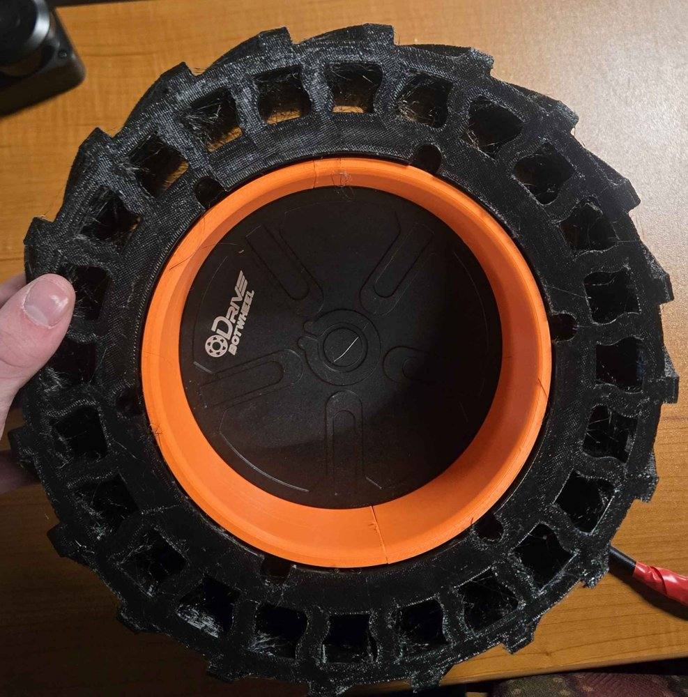
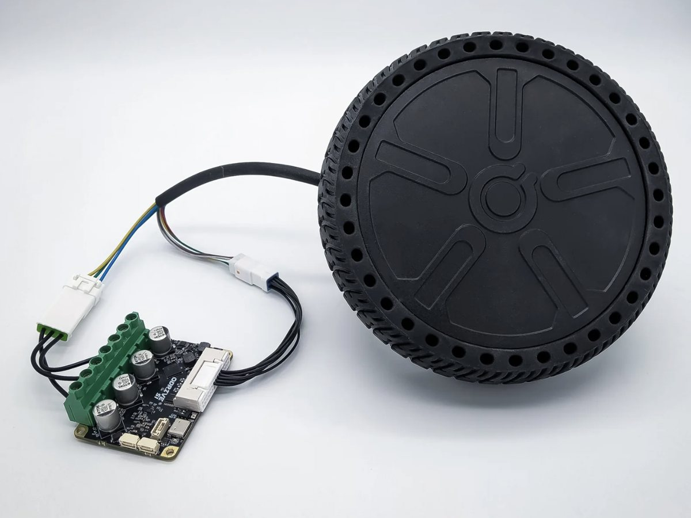
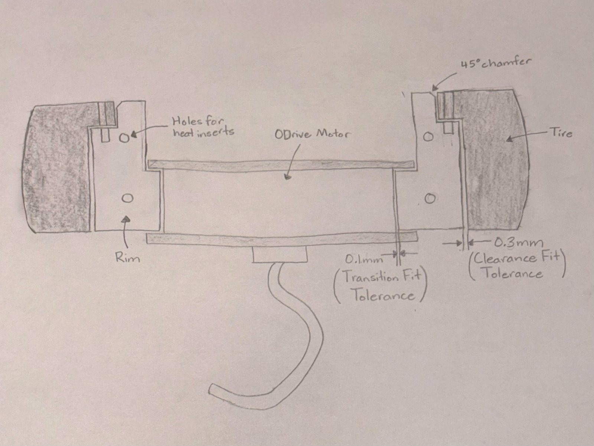
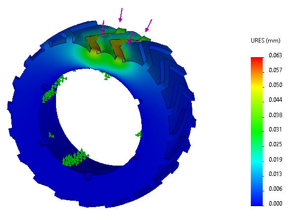
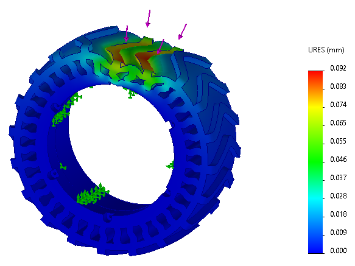
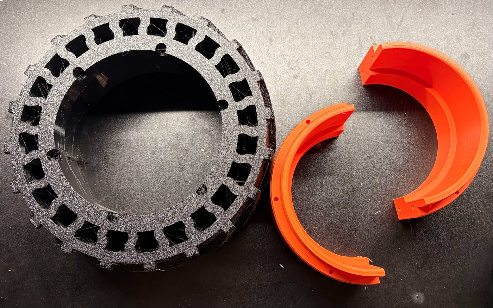

Shock-Absorbing Rover Wheel for an ODrive Hub Motor
A 3D-printed tire and two-piece rim that turn an off-the-shelf hub motor into an off-road wheel for a six-wheeled rover.
Overview
Goals
- Grip loose soil and steep slopes on URC's Utah desert course
- Absorb shock by flexing under loads above the rover's resting weight (about 20 lb per wheel)
- Mount to the ODrive hub motor without modifying it, so the motor stays sealed from dust
- Build every part in-house with 3D printing and heat-set inserts
Outcomes
- Two-piece rim clamps onto the hub with a 0.1 mm transition fit, with no changes to the motor
- Tire bolts to the rim through heat-set threaded inserts and slides on with a 0.3 mm clearance fit
- Relief slots raised peak deflection 46% over a solid tire at 20 lb (0.063 → 0.092 mm in FEA)
- Finished wheels let the rover climb slopes about 20° steeper

Problem
ODrive: Low Traction and No Shock Absorption
I chose the ODrive BotWheel because the motor sits inside the wheel hub, which keeps the drivetrain simple and its internals protected from dust. Its stock tire is thin, hard rubber with little grip and no cushioning, while URC runs on Utah desert terrain with loose soil, steep slopes, and vertical faces under a 50 kg (≈110 lb) rover mass limit.

Concept
Custom Rim Design for Tire-to-Hub Mounting
The hub has no mounting features, so I designed a two-piece rim that clamps around it with a 0.1 mm transition fit. Heat-set threaded inserts in the rim let the tire bolt on, and the tire slides over the rim with a 0.3 mm clearance fit guided by a 45° chamfer.

Challenges & Iteration
FEA-Driven Relief Slot Design
My first tire was fully solid, and SolidWorks FEA showed it barely deflected under a 20 lb load, roughly what each of the six wheels carries. Adding relief slots let the tread bend around rocks and slopes, raising peak deflection from 0.063 mm to 0.092 mm under the same load.
| Design | Peak Displacement | Change |
|---|---|---|
| v1 Solid Tire | 0.063 mm | Baseline |
| v2 Slotted Tire | 0.092 mm | +46% |



Build
Fabrication and Assembly: 3D-Printed Tire and Rim
These are the 3D-printed tire and two-piece rim that make up the wheel. The rim halves clamp around the ODrive hub motor, and the tire bolts onto the rim to complete the assembly.